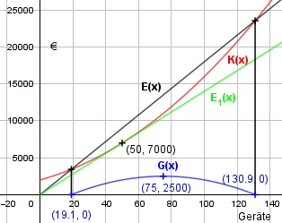

Aufgabe 79 Eine Firma produziert wöchentlich x Geräte. Die fixen Kosten betragen 2 000 €, die variablen Kosten 0,8x2 + 60x. Jedes Gerät kostet 180 €. a) Ab welcher Stückzahl macht der Betrieb Gewinn? b) Bei welcher Stückzahl ist der Gewinn am größten? c) Ab welchem Verkaufspreis macht die Firma keinen Gewinn mehr? K(x) = Kv(x) * Kf K(x) = 0,8x2 + 60x + 2 000 K'(x) = 1,6x + 60 E(x) = 180x G(x) = 180x - (0,8x2 + 60x + 2 000) G(x) = -0,8x2 + 120x - 2 000 G'(x) = -1,6x + 120 a) G(x) = 0 - 0,8x2 + 120x - 2 000 = 0 |:(-0,8) x2 - 150x + 2 500 = 0 p, q - Formel: p = -150, q = 2 500 x1,2 = x1,2 = 75 ± x1,2 = 75 ± x1,2 = 75 ± 55,9 x1 = 130,9 ME Gewinngrenze x2 = 19,1 ME Gewinnschwelle b) G'(x) = 0 -1,6x + 120 = 0 |-120 -1,6x = -120 |:(-1,6) x = 75 ME G''(x) = -1,6 < 0 --> Hochpunkt (75|2 500) c) E1(x) = p * x sei die neue Erlösfunktion. Der Betrieb macht ab dann keinen Gewinn, wenn sich K(x) und E1(x) nicht schneiden, sondern nur noch berühren. Der Graph von E1(x) ist dann eine Tangente an K(x). Steigung p von E1(x) ist zum einen K'(x) = 1,6x + 60 oder zum anderen E1(x) - E1(0) 0,8x2 + 60x + 2000 - 0 p = -------------- = ------------------------- x - 0 x Gleichgesetzt: 0,8x2 + 60x + 2 000 --------------------- = 1,6x + 60 |*x x 0,8x2 + 60x + 2 000 = 1,6x2 + 60x |-60x 0,8x2 + 2 000 = 1,6x2 |-0,8x2 0,8x2 = 2 000 | :0,8 x2 = 2 500 |ⱱ x1,2 = ± 50 ME x1 = 50 ME x2 = - 50 ME keine Lösung p = 1,6 * 50 + 60 = 140 GE/ME
